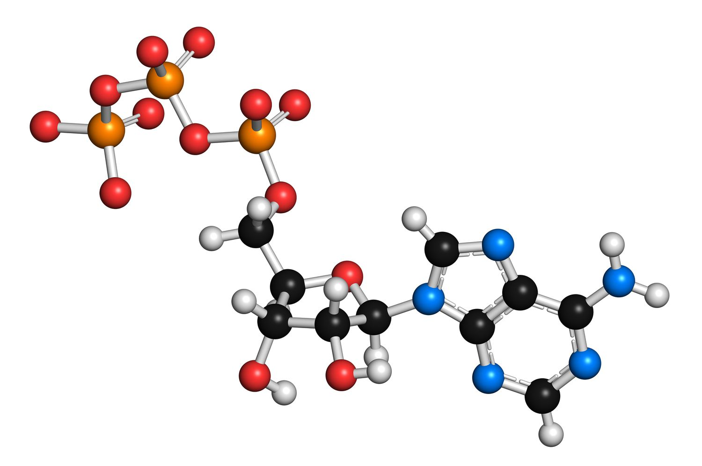

Snir Hordan
PhD Student at Technion.
Verified email at campus.technion.ac.il - Homepage
Geometric Deep Learning 🧠
Publications
-
Spectral Graph Neural Networks are Incomplete on Graphs with a Simple Spectrum
S Hordan, M Bechler-Speicher, G Lifshitz, N Dym
To be presented at the Conference on Neural Information Processing Systems (NeurIPS), 2025 (Spotlight)
-
Weisfeiler Leman for Euclidean Equivariant Machine Learning
S Hordan, T Amir, N Dym
Presented at the International Conference on Machine Learning (ICML), 2024
 -
Complete Neural Networks for Euclidean Graphs
S Hordan, T Amir, SJ Gortler, N Dym
Presented at the AAAI Conference on Artificial Intelligence (AAAI), 2024